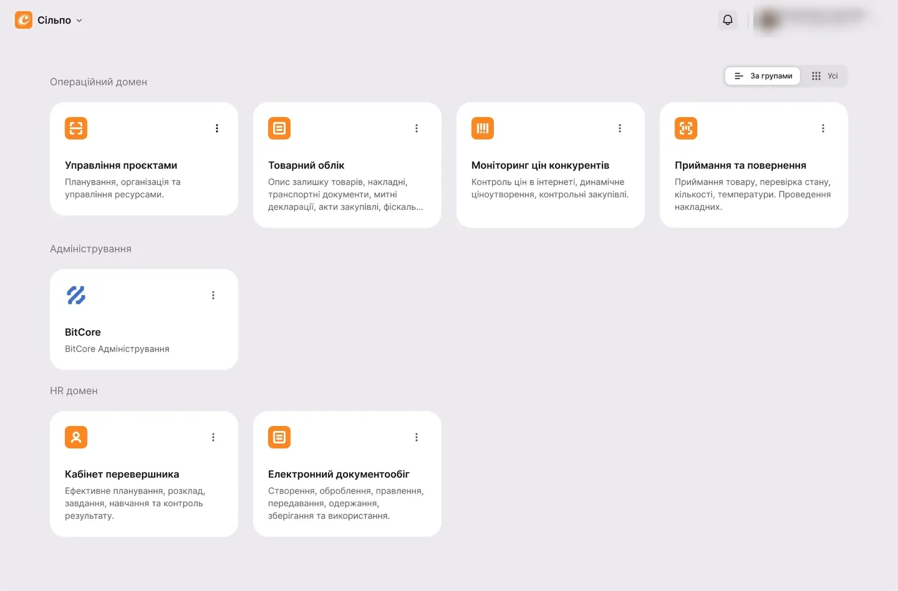
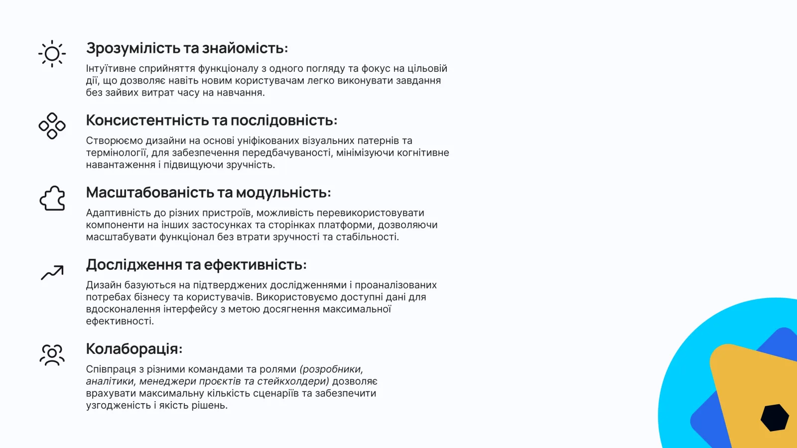
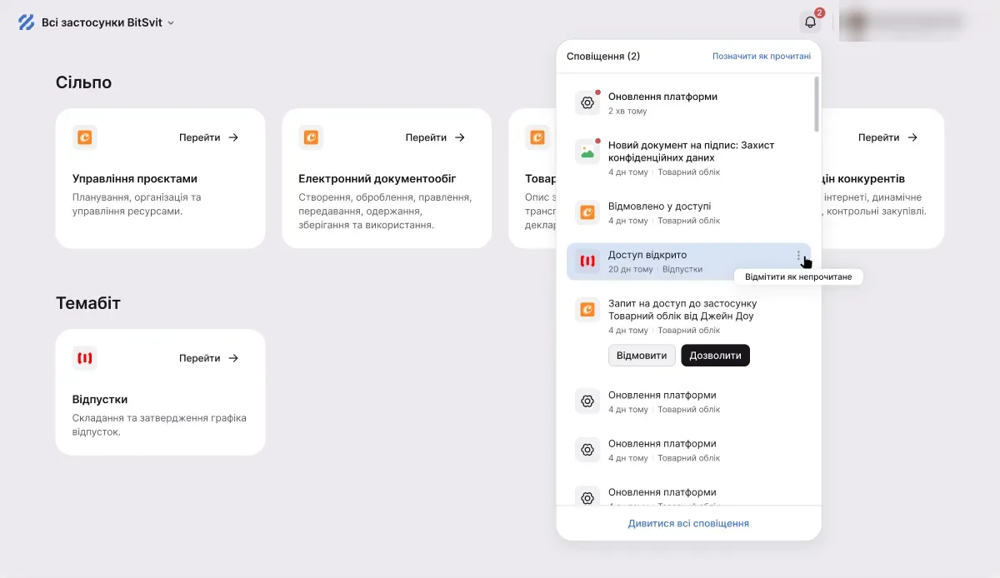

BitSvit Design System — one UI language for a B2B platform.
BitSvit is TemaBit’s platform that brings Fozzy Group’s business apps into one web and mobile portal: identity and access, subscriptions, billing and dozens of internal tools. I’m the designer responsible for its design system — the Figma library, the React UI kit in Storybook, and the process that keeps the two in sync.

A platform that replaces a desktop client.
TemaBit is the IT company of Fozzy Group and writes most of the holding’s software. BitSvit replaces an old desktop client with an API-first web and mobile portal that works on any device. Identity and access (BitCore IAM) is in production; subscriptions, billing and HR tools are built on the same foundation by different product teams.
One design system has to keep all of them consistent. The team started with two designers; today I run the system on my own, working with product designers, business analysts, product owners, frontend developers and architects.

Principles before components.
In September 2024 I ran workshops where the design team agreed on five principles. They became the tie-breaker for every later decision: when two solutions look equally good, the one that serves the principles wins.
- Clarity and familiarityA new user understands the screen at a glance and reaches the target action without training.
- ConsistencyUnified visual patterns and terminology make the platform predictable and lower cognitive load.
- Scalability and modularityComponents work across apps, pages and devices without losing usability.
- Research and efficiencyDecisions rest on research and on business and user data.
- CollaborationDevelopers, analysts, managers and stakeholders shape the solution together.

Tokens and a Figma ↔ code pipeline.
The system runs on three layers of tokens and keeps Figma and code in step with tooling rather than manual checks.
- Token releases without hand-offsI agreed the publishing flow with the developers — Tokens Studio, a merge request, style-dictionary, an automatic release of the UI kit — and wrote an AI skill that prepares the release in one command.
- Code Connect550 links between Figma and code: 55 components and 495 icons. A developer opens a component in Figma and sees the real React usage, not a guess.
- Storybook → Figma registryA mapping of 59 story tags and 265 prop rules. 617 of 628 tags resolve to a real Figma variant, so a screen described in code can be rebuilt in Figma from library components.
- My own Figma pluginA plugin with a local bridge that lets scripts and AI agents edit the 255-component library about 150 times faster than the first version.

Design reviews against the real code.
A component is done when it ships correctly, not when the Figma frame looks right. I review every implemented component in Storybook against the Figma spec: computed styles in the browser, every state, keyboard behaviour.
- Link8 mismatches, one of them a blocker: a disabled link could still be opened from the keyboard. The review added an
isUnderlinedprop and new tokens. - Pagination and SimpleTableFour fixes for pagination; the new simple table was approved for implementation after one review round.
- Typography audit857 text layers across atoms, molecules and organisms moved from 10 px to 12 px styles, with six before/after tickets for frontend.
- Accessible status badgesSemi-transparent badge colours changed contrast with every row background. Opaque tokens keep text contrast steady at 5.9–7.5 : 1, and the review flagged the badge edge for WCAG 1.4.11 with a dedicated border token.

Patterns that people and AI agents can follow.
Components alone do not make screens consistent. I analysed 158 production screens and turned them into 32 patterns — page templates, filters, bulk actions, saving, notifications — with every rule marked as approved, default, hypothesis or open.
- Written for humans and machinesThe patterns live as Markdown next to Storybook, so AI coding agents read the same rules as designers. Clickable prototypes are now built by AI from real kit components, then reviewed by design as a formal step.
- A decision log21 recorded decisions with context and trade-offs: a 12-column grid with 1024 / 1440 / 1920 breakpoints, filters in a drawer as the standard, a data-grid base font of 12 px with a 14 px option, accessibility as its own work stream.

Closing the gap between design and code.
I audited two years of design tasks against frontend tickets. The audit showed that a large share of finished design work never reached code — not because of quality, but because hand-off had no owner. The answer was process, not more components:
- A live readiness pageEvery component with its status in Figma, Storybook and production, updated as part of the team’s rituals.
- A showcase48 component cards, each linked to its Storybook story and its Figma master, so nobody has to ask what exists.
- Design review in the delivery flowA component or an AI prototype moves forward only after a design review against the real code.
Three lessons I’m carrying forward.
- Storybook beats Figma as the source of truthCode is what users get. Specs that do not live next to code drift within weeks.
- Measure the hand-off, not the libraryThe number of components says little. The share of design that reaches production says a lot.
- AI needs written rulesAgents follow patterns well when the patterns are explicit, versioned and stored next to the code.
If you liked this, also see…
Found this through Upwork?
Then you already know where to reach me. Send the brief through your Upwork job post or an invite — I usually reply within a working day.